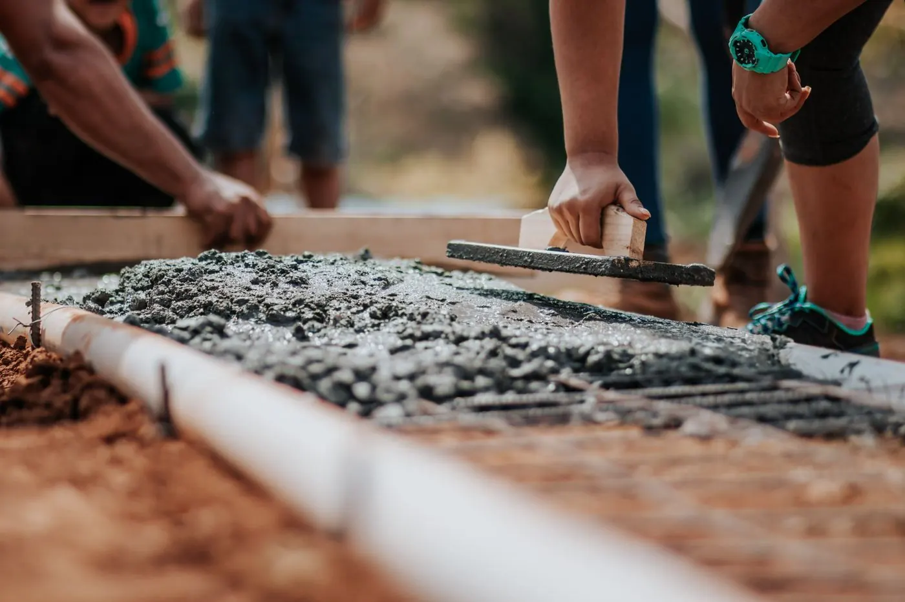
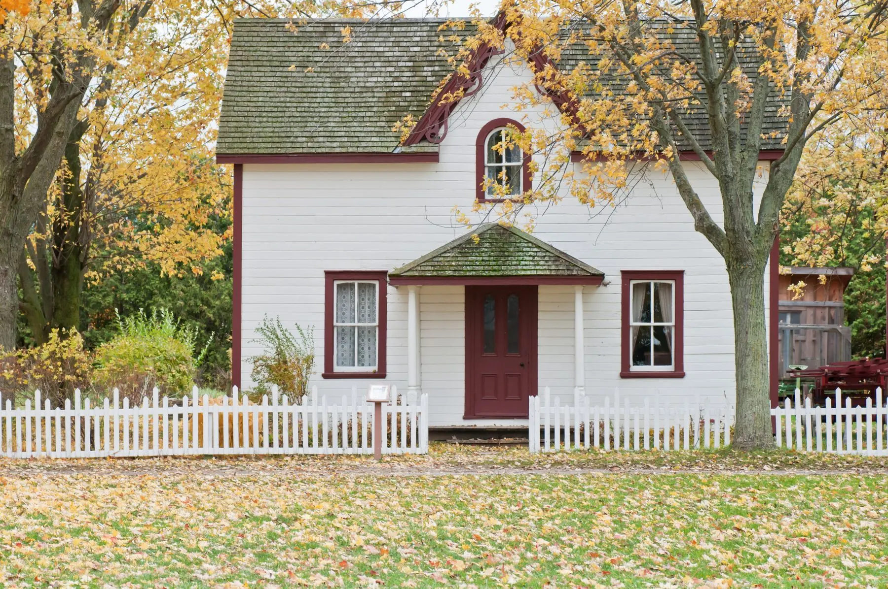
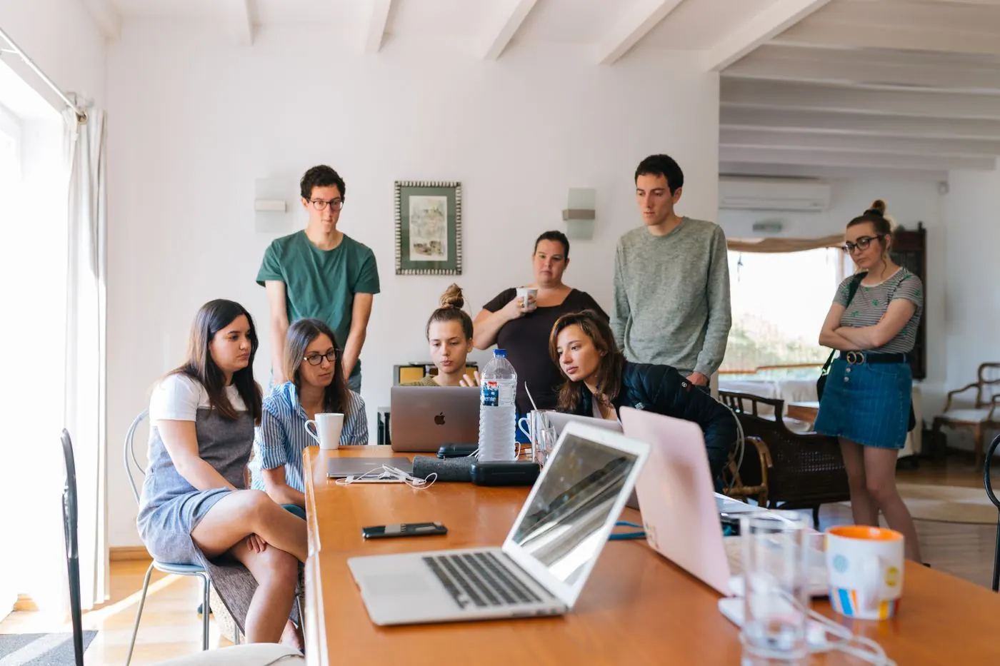
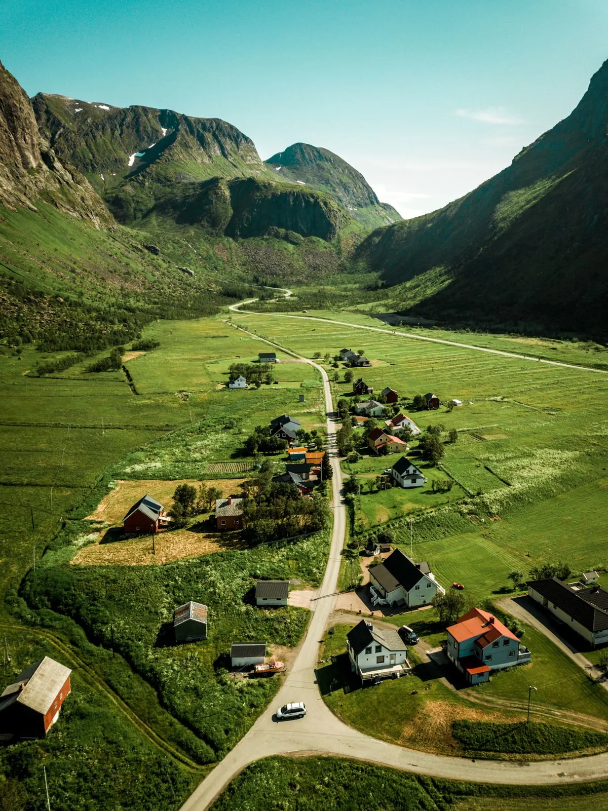

01 / Build
Money to build and repair homes.
Below-market loans for affordable homes and community facilities.
See loans and funding ↗For more than 50 years, we have helped rural communities build and keep homes people can afford, with loans, training, research and expert advice.
Looking for a home or help with rent? Find local help ↗

Homes that hold communities togetherSample photoWhether you build homes, run a program or fund the work, start here.

Below-market loans for affordable homes and community facilities.
See loans and funding ↗
One in five Americans lives in a rural community. We make sure the local groups serving them have the money, know-how and data to keep homes safe and affordable.
Meet HAC ↗
Research that turns national numbers into local action. Sample report shown.
Register in a few clicks. Every session is captioned, with recordings and slides posted afterward.
Live captions · Recording and slides afterward
Washington, D.C. and online
Live captions · Recording available
Neighbors, builders and local groups making rural homes possible.
Every video has captions and a full transcript.
New research, trainings and funding news every two weeks.